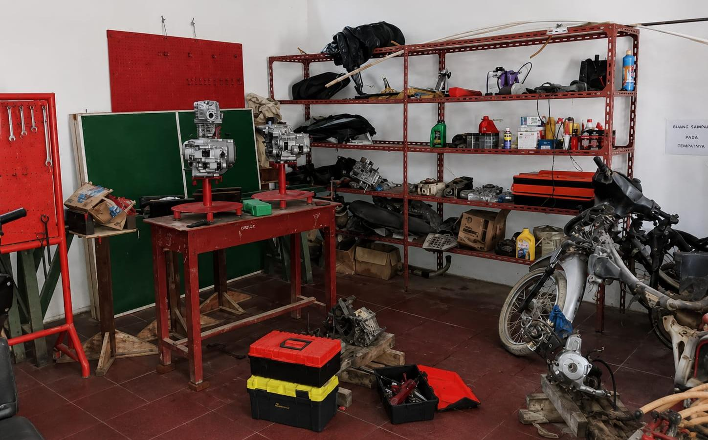
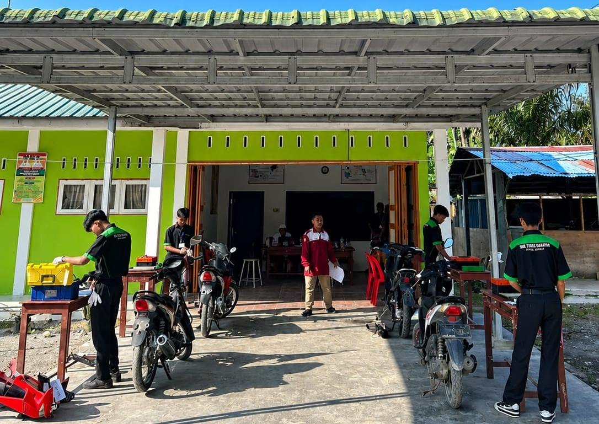
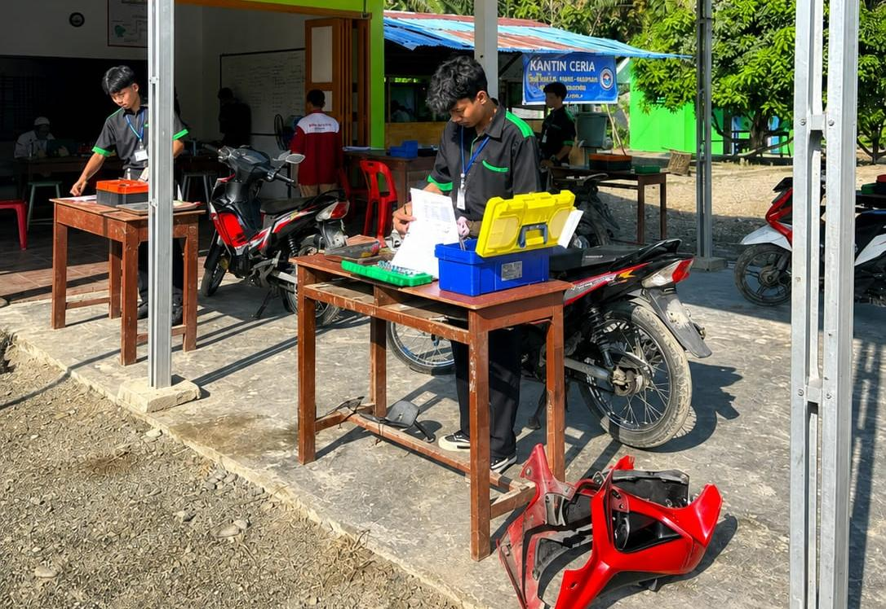

Teknik Sepeda Motor (TSM) merupakan program keahlian yang mempelajari perawatan, perbaikan, dan teknologi sepeda motor sesuai dengan perkembangan industri otomotif. Peserta didik dibekali dengan keterampilan praktik, pengetahuan mesin, serta sikap kerja profesional sehingga siap memasuki dunia kerja maupun berwirausaha di bidang otomotif.

Siswa mempelajari sistem kelistrikan, injeksi, pengapian, serta penggunaan alat diagnostik untuk mendeteksi dan memperbaiki kerusakan.

Peserta didik dilatih membongkar, memperbaiki, dan merakit kembali mesin sepeda motor agar bekerja dengan baik dan optimal.

Siswa mempelajari cara melakukan perawatan berkala, servis mesin, dan pemeriksaan komponen sepeda motor sesuai dengan standar industri otomotif.